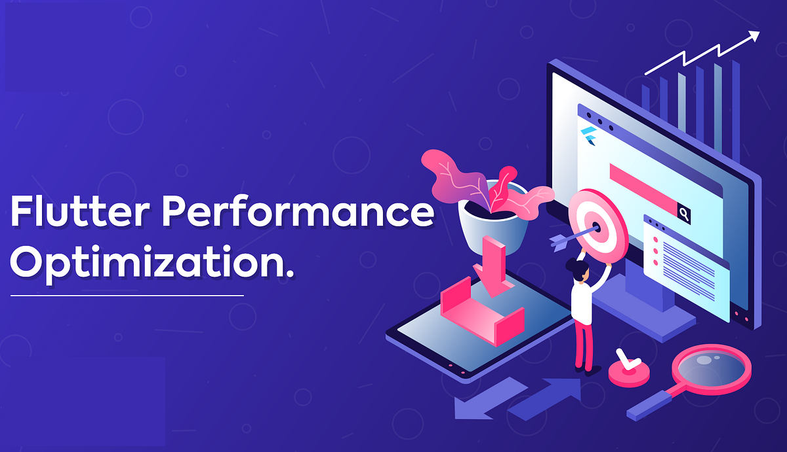

Beyond 60 FPS: Optimizing Flutter Performance for a New Era (2026)

Last Updated: March 25, 2026 | Reading Time: 11 mins
In This Guide
- 1. The Performance Landscape in 2026
- 2. Understanding the Impeller Revolution
- 3. WASM: The Fast Future of Flutter Web
- 4. Eliminating Shaders & Junk in UI Loading
- 5. State Management & Rebuild Efficiency
- 6. Multi-format Image & Asset Optimization
- 7. Leveraging Dart 3.x for Performance
- 8. Advanced Profiling with DevTools
- 9. Optimizing API Latency for Mobile
- 10. Developing a Performance-First Culture
1. The Performance Landscape in 2026
Welcome to 2026, where "good enough" performance is no longer sufficient. With the wide availability of 120Hz and 144Hz displays, users are increasingly sensitive to even the smallest "jank" or frame drops. In this era, building a Flutter app that merely works is the baseline; building one that feels frictionless is the competitive advantage.
Performance optimization has shifted from simple list-view recycling to deep architectural decisions involving custom renderers and binary-level optimizations. This guide will take you through the most critical updates every modern Flutter engineer must master.
2. Understanding the Impeller Revolution
If you're still using Skia in 2026, you're living in the past. Impeller, Flutter's next-generation rendering engine, has officially matured into the standard. Unlike Skia, which often suffered from shader compilation jank, Impeller pre-compiles a set of MSL (Metal Shading Language) shaders when the app is built. This eliminates the "warm-up" phase that previously led to early-session lurches.
3. WASM: The Fast Future of Flutter Web
WebAssembly (WASM) is the single biggest leap for Flutter Web performance. In 2026, almost all modern browsers support the necessary GC (Garbage Collection) extensions for Dart to WASM compilation. By compiling your Flutter app to WASM instead of JavaScript, you gain direct access to the browser's hardware-level instructions, reducing bundle size and execution time by nearly 2x.
flutter build web --wasm
This command is now the gold standard for high-performance dashboards and data-heavy SPAs built with Flutter.
4. Eliminating Shaders & Junk in UI Loading
Even with Impeller, poor widget tree management can kill performance. Avoid deep nesting of widgets. In 2026, use the RepaintBoundary widget to isolate complex animations from the rest of the application. This prevents the framework from repainting the entire screen when only a small element (like a progress bar) is changing.
5. State Management & Rebuild Efficiency
Whether you choose Riverpod, BLoC, or Signals, the goal remains the same: minimal rebuilds. In 2026, we lean heavily into "Selective Listening." Ensure you are only watching specific fields of your state objects rather than the entire object. This prevents an entire list of 100 items from rebuilding when only the "Current User ID" changes.
6. Multi-format Image & Asset Optimization
Gone are the days of simple JPEGs. In 2026, Flutter apps should support AVIF and WebP as primary image formats. These offer superior compression-to-quality ratios. Furthermore, utilize the `cacheHeight` and `cacheWidth` properties in `Image.network` to ensure that Flutter doesn't decode a 4K image if it's only being displayed in a 100x100 avatar circle.
7. Leveraging Dart 3.x for Performance
Dart has evolved specifically to facilitate performance. Features like Records and Patterns are not just syntactic sugar; they allow for more efficient data handling without the overhead of creating numerous temporary objects. In 2026, object allocation remains one of the most expensive operations. Fewer objects mean fewer GC cycles, which means smoother animations.
8. Advanced Profiling with DevTools
You cannot fix what you cannot measure. Flutter DevTools in 2026 has introduced the Frame Budget Tracker. This tool shows you exactly where each millisecond of your 8ms (for 120 FPS) or 16ms (for 60 FPS) budget is going. If your "Building" time is high, you have a widget tree problem. If your "Layout" time is high, you have a constraint problem.
9. Optimizing API Latency for Mobile
Performance isn't just about frames; it's about time-to-first-meaningful-paint. In 2026, use HTTP/3 (QUIC) for your networking. This significantly reduces latency in poor network conditions (common on mobile). Additionally, implement aggressive client-side caching to ensure your app feels "instant" even when offline.
10. Developing a Performance-First Culture
At Sarankar Developers, we don't treat performance as a "final step" optimization. We treat it as an essential feature, just like security or UI design. By adopting a performance-first mindset from day one, you avoid the technical debt of "optimization sprints" later in the project.
Ready to build the fastest app in your niche? Contact Sarankar Developers today and let's optimize your digital future.
High-Octane Development Awaits
Is your app failing the 120 FPS challenge? Our engineers at Sarankar Developers are masters of the Flutter engine. Let's make your experience truly legendary.
Talk to an Optimization Expert
Written by Pratham Sarankar
CEO at Sarankar Developers. Flutter expert and monetization strategist with 4+ years of experience in building high-performance mobile applications.